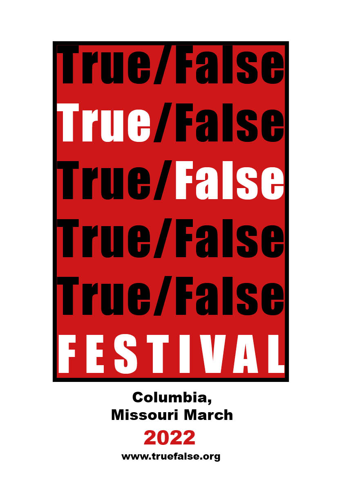
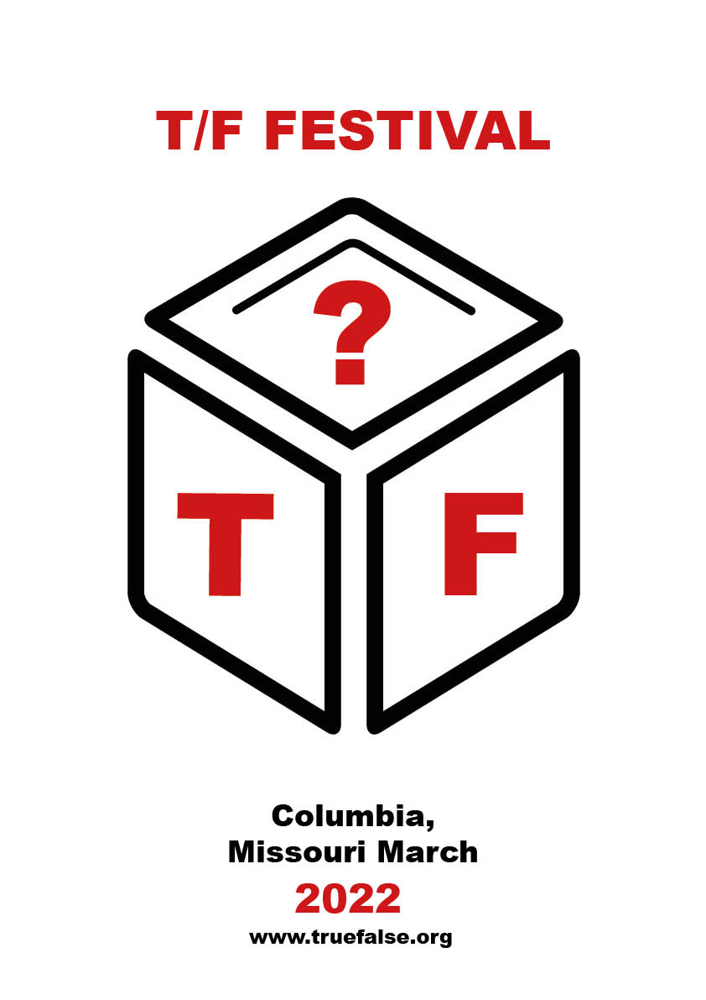
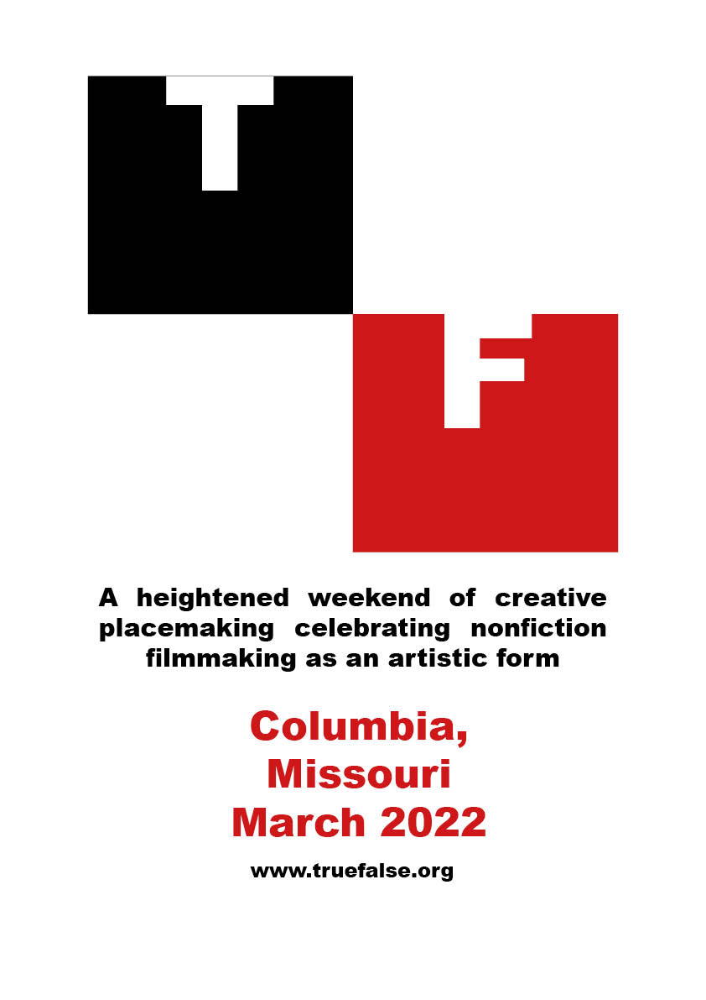

This poster shows strong elements of contrast as the white is strikingly different from the rest highlighting the importance of the festival name

The proximity included in my second poster stands out as 3 angled squares are seen near eachother creating a cube

In my final poster allignment is present as the four squares (two invisible) are in correct relative positions